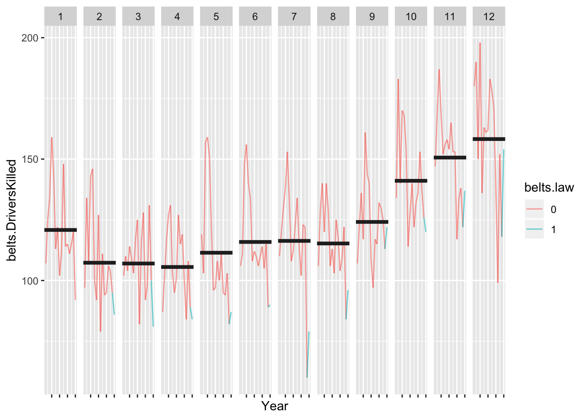
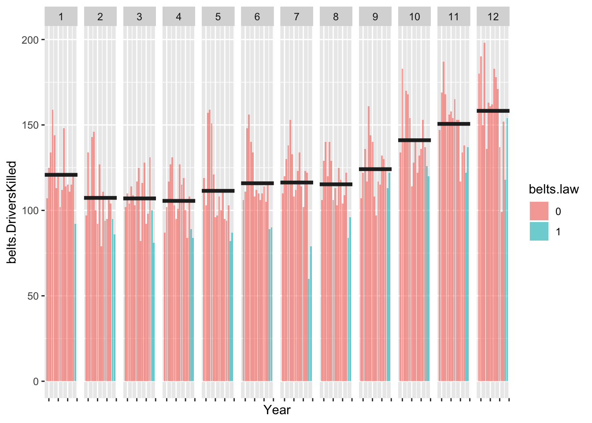
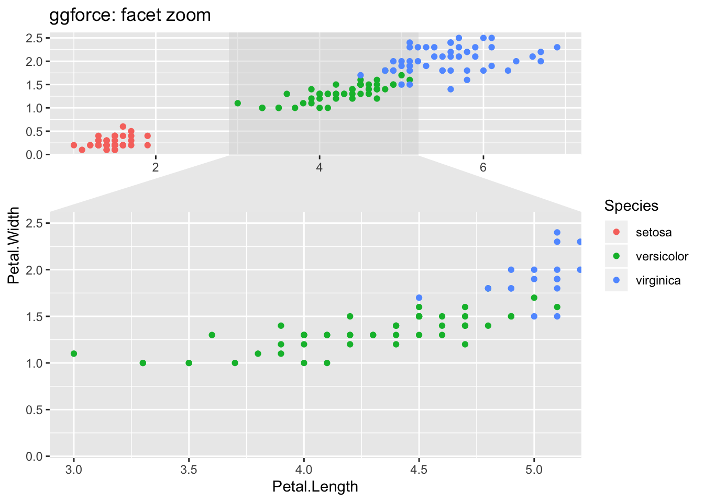
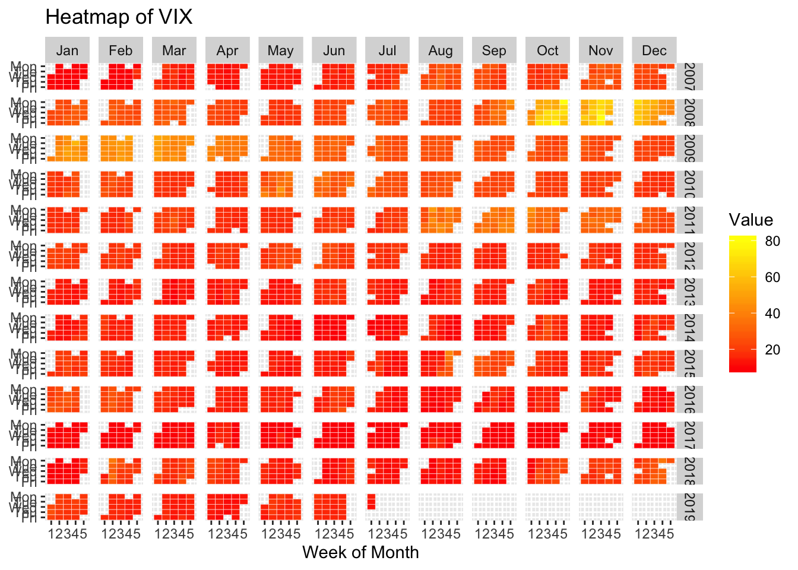

Chapter 7 Fluctuation–timelines
library(tidyverse)7.1 Multiple time series
two lines on one plot and problems faceting
7.2 Time series with reference line
## Reference lines in time series
belts = Seatbelts
belts.df = as.data.frame(
cbind(Year = round(trunc(time(belts)), 1),
Month = cycle(belts),
belts))
belts.df$belts.law = as.factor(belts.df$belts.law)
belts.DriversKilled.bymonth = belts.df %>% group_by(Month) %>%
summarise(mean.DriversKilled = mean(belts.DriversKilled))
ggplot(belts.df, aes(x = Month, y = belts.DriversKilled)) +
geom_line(aes(colour = belts.law, group = Year)) +
geom_line(data = belts.DriversKilled.bymonth,
aes(x = Month, y = mean.DriversKilled)) +
facet_wrap(~Year, nrow= 4, ncol= 4) +
theme_bw() +
theme(axis.text.x = element_blank(),
axis.ticks.x = element_blank(),
legend.position = "none")
belts.df = belts.df %>% group_by(Year) %>% mutate(summer.s=Month[Month==5], summer.e=Month[Month==9])
ggplot(belts.df, aes(Month, belts.DriversKilled)) +
geom_rect(aes(xmin=summer.s, xmax=summer.e, ymin=-Inf, ymax=+Inf),
fill = "white") +
geom_path(aes(colour = belts.law, size = belts.PetrolPrice, group = Year), lineend = "round") +
geom_line(data = belts.DriversKilled.bymonth, aes(x = Month, y = mean.DriversKilled)) +
facet_wrap(~Year, nrow= 4, ncol= 4) 
7.3 Cycle plot
Cycle plot make comparions between months easy. Showing bars rather than lines helps focus attenton the specitic years when the seatbelt law was enacted.
hline.df <- belts.df %>% group_by(Month) %>% summarize(m.killed = mean(belts.DriversKilled))
ggplot() +
geom_path(data = belts.df, aes(x = Year, y = belts.DriversKilled, group = Month, color = belts.law), alpha = .6) +
geom_hline( data = hline.df, aes(yintercept = m.killed), colour = "grey15", size = 1.5) +
facet_grid(~Month) +
theme(axis.text.x = element_blank())
ggplot() +
geom_bar(data = belts.df, aes(x = Year, y = belts.DriversKilled, group = Month, fill = belts.law), alpha = .6,
stat = "identity") +
geom_hline( data = hline.df, aes(yintercept = m.killed), colour = "grey15", size = 1.5) +
facet_grid(~Month) +
theme(axis.text.x = element_blank())
7.4 Step graph
TODO
7.5 Faceted zoom
library(ggforce)
## Examples from: https://cran.r-project.org/web/packages/ggforce/vignettes/Visual_Guide.html
ggplot(iris, aes(Petal.Length, Petal.Width, colour = Species)) +
geom_point() +
facet_zoom(x = Species == "versicolor")+
labs(title = "ggforce: facet zoom")
7.6 Ridge plot
https://cran.r-project.org/web/packages/ggridges/vignettes/gallery.html
## Ridge plot
library(ggridges)##
## Attaching package: 'ggridges'## The following object is masked from 'package:ggplot2':
##
## scale_discrete_manuallibrary(ggplot2movies)
movies %>% filter(year>1912, length<250) %>%
ggplot(aes(x = length, y = year, group = year)) +
geom_density_ridges(scale = 10, size = 0.25, rel_min_height = 0.03, alpha=.75) +
scale_x_continuous(limits=c(0, 250), expand = c(0.01, 0)) +
scale_y_reverse(breaks=c(2000, 1980, 1960, 1940, 1920, 1900), expand = c(0.01, 0)) +
theme_ridges()## Picking joint bandwidth of 6.897.7 Stacked area and line graphs
Challenges of comparing individual contributions, ease of seeing combined effect Stream plot
“Streamgraphs are a generalization of stacked area graphs where the baseline is free. By shifting the baseline, it is possible to minimize the change in slope (or wiggle) in individual series, thereby making it easier to perceive the thickness of any given layer across the data. Byron & Wattenberg describe several streamgraph algorithms in ‘Stacked Graphs—Geometry & Aesthetics1’”2
“A steamgraph is a more aesthetically appealing version of a stacked area chart. It tries to highlight the changes in the data by placing the groups with the most variance on the edges, and the groups with the least variance towards the centre. This feature in conjunction with the centred alignment of each of the contributing areas makes it easier for the viewer to compare the contribution of any of the components across time.”
#devtools::install_github('Ather-Energy/ggTimeSeries')
library(babynames)
library(ggTimeSeries)
names.df = babynames %>%
filter(grepl("^Jo", name)) %>%
group_by(year, name) %>%
tally(wt=n)
##TODO smooth sequence
ggplot(names.df, aes(year, y = nn, group = name, fill = name)) +
stat_steamgraph() +
labs(x="", y = "") +
scale_x_continuous(expand = c(0, 0)) +
theme_minimal() +
theme(legend.position = "none",
axis.text.y=element_blank())7.8 Temporal heatmap
TODO replace with rain data for SEA from https://www.r-bloggers.com/ggplot2-time-series-heatmaps-revisited-in-the-tidyverse/
# The core idea is to transform the data such that one can
# plot "Value" as a function of "WeekOfMonth" versus "DayOfWeek"
# and facet this Year versus Month
xts_heatmap <- function(x){
data.frame(Date=as.Date(index(x)), x[,1]) %>%
setNames(c("Date","Value")) %>%
dplyr::mutate(
Year=lubridate::year(Date),
Month=lubridate::month(Date),
# I use factors here to get plot ordering in the right order
# without worrying about locale
MonthTag=factor(Month,levels=as.character(1:12),
labels=c("Jan","Feb","Mar","Apr","May","Jun","Jul","Aug","Sep","Oct","Nov","Dec"),ordered=TRUE),
# week start on Monday in my world
Wday=lubridate::wday(Date,week_start=1),
# the rev reverse here is just for the plotting order
WdayTag=factor(Wday,levels=rev(1:7),labels=rev(c("Mon","Tue","Wed","Thu","Fri","Sat","Sun")),ordered=TRUE),
Week=as.numeric(format(Date,"%W"))
) %>%
# ok here we group by year and month and then calculate the week of the month
# we are currently in
dplyr::group_by(Year,Month) %>%
dplyr::mutate(Wmonth=1+Week-min(Week)) %>%
dplyr::ungroup() %>%
ggplot(aes(x=Wmonth, y=WdayTag, fill = Value)) +
geom_tile(colour = "white") +
facet_grid(Year~MonthTag) +
scale_fill_gradient(low="red", high="yellow") +
labs(x="Week of Month", y=NULL)
}
require(quantmod)## Loading required package: quantmod## Loading required package: xts## Loading required package: zoo##
## Attaching package: 'zoo'## The following objects are masked from 'package:base':
##
## as.Date, as.Date.numeric##
## Attaching package: 'xts'## The following objects are masked from 'package:dplyr':
##
## first, last## Loading required package: TTR## Version 0.4-0 included new data defaults. See ?getSymbols.
## Learn from a quantmod author: https://www.datacamp.com/courses/importing-and-managing-financial-data-in-r# Download some Data, e.g. the CBOE VIX
quantmod::getSymbols("^VIX",src="yahoo")## 'getSymbols' currently uses auto.assign=TRUE by default, but will
## use auto.assign=FALSE in 0.5-0. You will still be able to use
## 'loadSymbols' to automatically load data. getOption("getSymbols.env")
## and getOption("getSymbols.auto.assign") will still be checked for
## alternate defaults.
##
## This message is shown once per session and may be disabled by setting
## options("getSymbols.warning4.0"=FALSE). See ?getSymbols for details.##
## WARNING: There have been significant changes to Yahoo Finance data.
## Please see the Warning section of '?getSymbols.yahoo' for details.
##
## This message is shown once per session and may be disabled by setting
## options("getSymbols.yahoo.warning"=FALSE).## [1] "VIX"xts_heatmap(Cl(VIX)) + labs(title="Heatmap of VIX")